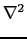
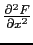
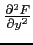
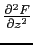

suivant: La matrice hessienne :
monter: Les expressions de plusieurs
précédent: Le gradient : derive
Table des matières
Index
Le Laplacien : laplacian
laplacian a deux paramètres : une
expression F dependant de n variables rèelles et un vecteur de dimension
n indiquant le nom de ces variables.
laplacian renvoie le laplacien de F (
(F) =  +  +  si n = 3).
Exemple
Déterminer le laplacien de
F(x, y, z) = 2x2y - xz3.
On tape :
laplacian(2*x^2*y-x*z^3,[x,y,z])
On obtient :
4*y+-6*x*z
Documentation de giac écrite par Renée De Graeve